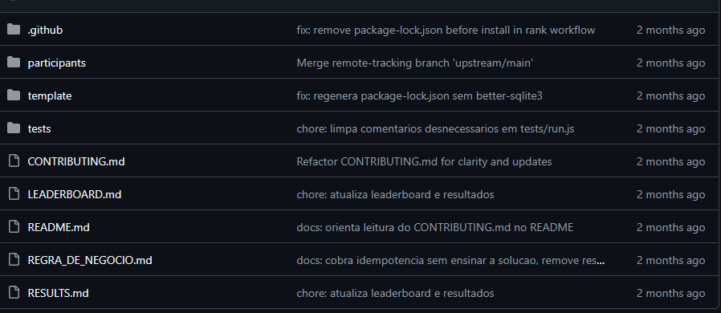
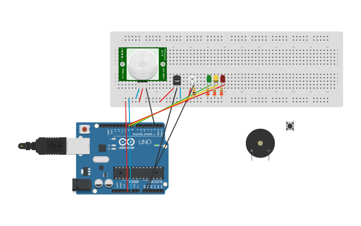

1º Trimestre
GrandPrix

2º Trimestre
Programação de Aplicativos e Desenvolvimento de Sistemas

Descrição: Descrição da atividade.
Habilidades trabalhadas: H1- Reconhecer requisitos de qualidade, integridade, usabilidade e segurança da informação H4- Selecionar linguagem programação de acordo com os requisitos H6- Aplicar linguagem de programação por meio de apis, bibliotecas, frameworks na construção de rotinas de software
Internet das Coisas

Atividade de IoT
Descrição: Semáforo feito no thinkercad
Código: Linguagem utilizada foi a ARDUINO IDE
Habilidades desenvolvidas: H1, H2,H12 e H15